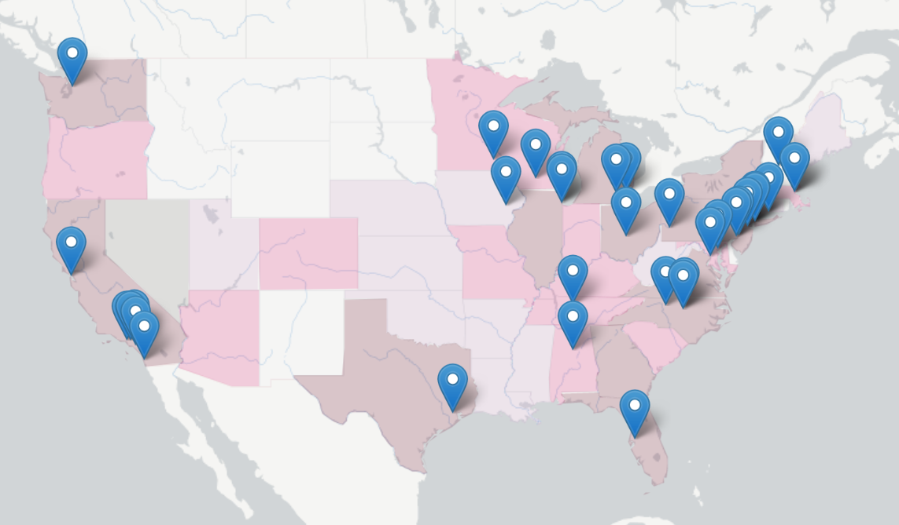
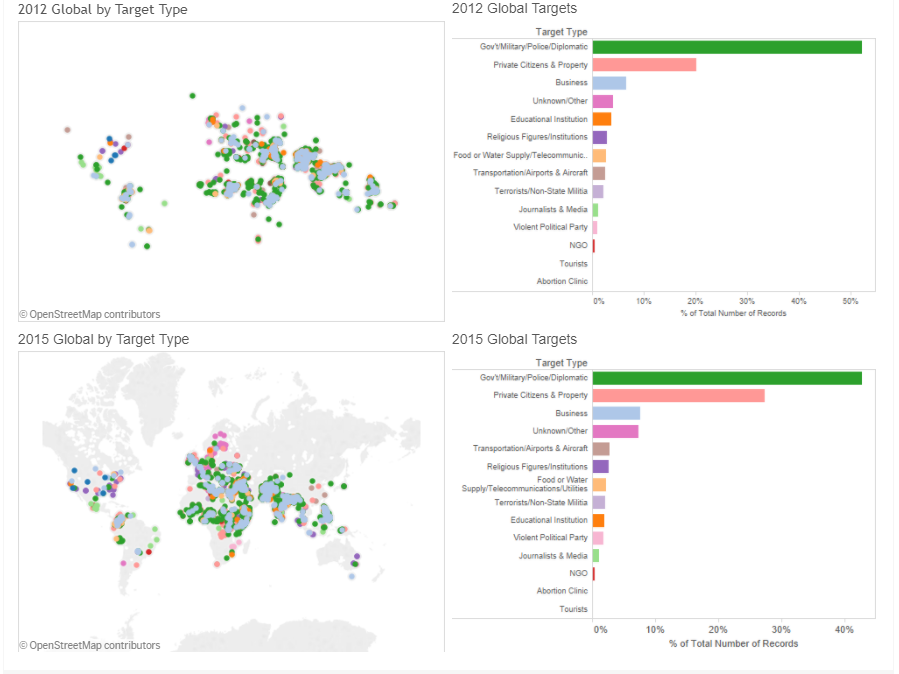
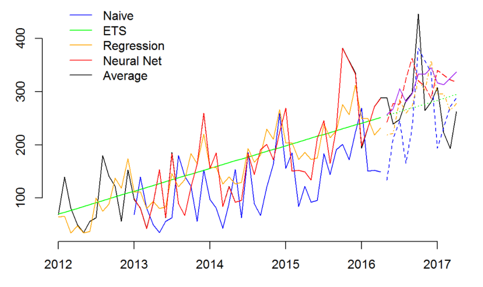
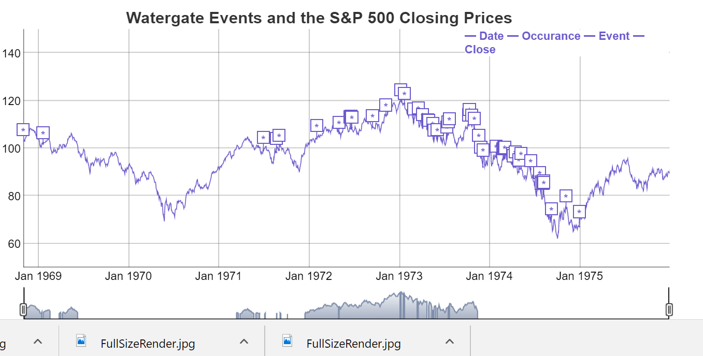

Objective
To participate in business decision making processes through astute collection, statistical analysis, and compilation of all relevant data and rendering it accessible with reports, visualizations, and presentations. Skills & Abilities
Education
MBA | MAY 2017 | USM, PORTLAND, ME | GPA: 4.0/4.0
BS, MSN | 1994 & 1996 | COLUMBIA UNIVERSITY, NY, NY | GPA: 3.5/4.0
Experience
RESEARCH ASSISTANT | BPEACE, NY, NY | FALL 2016 - PRESENT
Conducted research on potential sites in the U.S. for deployment of business volunteers in crime affected and underserved communities, with the objective of reversing the escalation of crime rates through the creation of economic opportunity.
Assembled ancillary data from PDF reports using CSS selection tools and careful reading technique to augment structured datasets; located and corrected anomalies and inaccuracies and rendered the results accessible for an actionable report.
BUSINESS OWNER | FIRST & LAST TAVERN, PINE POINT, ME | 2005-2013
CERTIFIED NURSE MIDWIFE | BEVERLY HOSPITAL, BEVERLY, MA | 7/09-9/2013
CLINICAL ADJUNCT PROFESSOR | UNE, PORTLAND, ME | SPRING 2011
REGISTERED NURSE | MERCY HOSPITAL, PORTLAND, ME | 9/1998-7/2005
|  |  |  |  |
|---|---|---|---|
| Cancer | Terror | Forecasting | Stock Market |
MAPPING:
FORECASTING:
STOCK MARKET:
Session information:
head(mtcars)## mpg cyl disp hp drat wt qsec vs am gear carb
## Mazda RX4 21.0 6 160 110 3.90 2.620 16.46 0 1 4 4
## Mazda RX4 Wag 21.0 6 160 110 3.90 2.875 17.02 0 1 4 4
## Datsun 710 22.8 4 108 93 3.85 2.320 18.61 1 1 4 1
## Hornet 4 Drive 21.4 6 258 110 3.08 3.215 19.44 1 0 3 1
## Hornet Sportabout 18.7 8 360 175 3.15 3.440 17.02 0 0 3 2
## Valiant 18.1 6 225 105 2.76 3.460 20.22 1 0 3 1